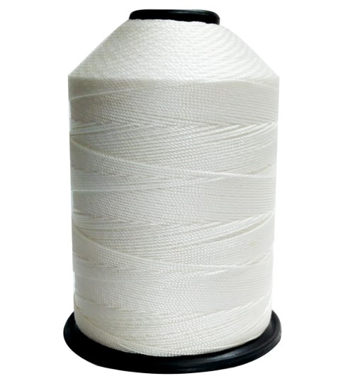
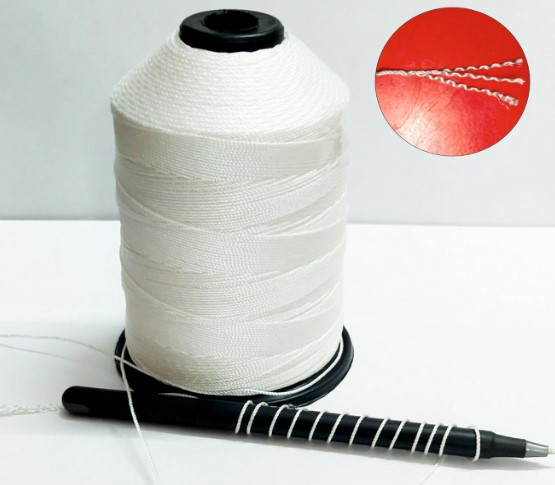
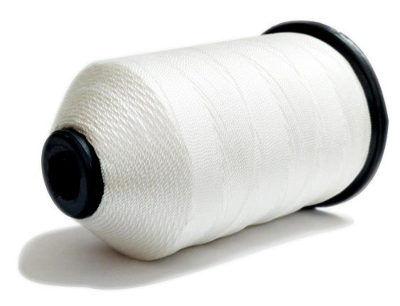
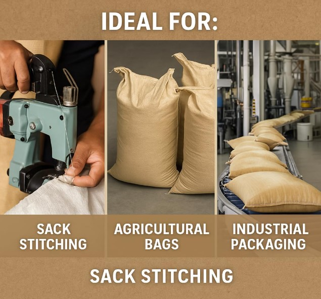
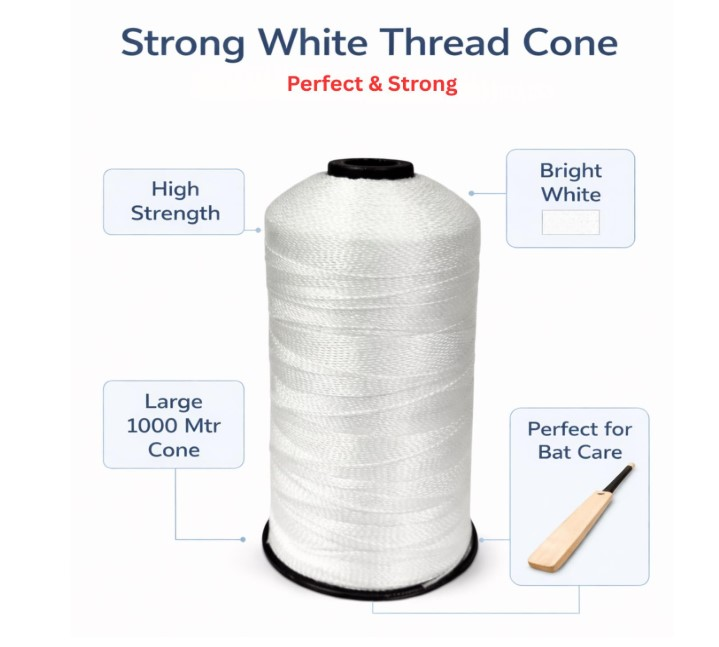

Product Overview
Nylon Thread is widely used for stitching and sewing
applications where high strength, durability, and
resistance to wear are required.
Manufactured from premium nylon fibers, these threads
offer excellent tensile strength, smooth finish, and
long service life for industrial and commercial use.
Key Features
- High tensile strength and durability
- Smooth texture for consistent stitching
- Resistant to abrasion and wear
- Good resistance to moisture and chemicals
- Suitable for heavy-duty applications
Specifications
- Material: Nylon (Polyamide)
- Form: Thread / Yarn
- Thickness: Various deniers available
- Colour: Natural / White (custom options)
- Usage: Stitching and sewing
Applications & Use Cases
- Industrial stitching and fabrication
- Tarpaulin and bag manufacturing
- Textile and garment production
- Upholstery and leather goods
- General-purpose sewing
Best Suited For
- Tarpaulin, tent, and industrial cover stitching
- Bag, sack, and packaging material manufacturing
- Upholstery, footwear, and leather goods production
Selection Note
For Indian manufacturing conditions, thread denier should
be selected based on fabric thickness and machine speed.
Heavier denier nylon threads are recommended for tarpaulins
and bags to prevent seam failure under load.
Commonly Used Along With
- Industrial Sewing Machines
- Tarpaulin Fabric or Industrial Textiles
- Needles and Stitching Accessories
Product FAQs
-
Which denier nylon thread should be used for tarpaulin stitching?
Higher denier nylon threads are recommended for tarpaulin and cover stitching
to handle fabric thickness, tension, and outdoor load conditions.
-
Is nylon thread suitable for industrial sewing machines?
Yes. Nylon thread performs well on industrial machines when matched with
correct needle size and machine speed settings.
-
Can nylon thread withstand outdoor and moisture exposure?
Nylon thread offers good resistance to moisture and chemicals, making it
suitable for outdoor-use products like tarpaulins and bags.
-
How does nylon thread compare to polyester thread?
Nylon thread offers higher elasticity and tensile strength, while polyester
is preferred where lower stretch is required. Selection depends on application.
-
Does thread thickness affect seam strength?
Yes. Incorrect thread thickness can lead to seam breakage or fabric damage.
Thread denier should always match fabric weight and application load.
-
Are bulk spools available for manufacturers?
Yes. Nylon thread is available in bulk spool quantities and custom deniers
for industrial and manufacturing buyers.